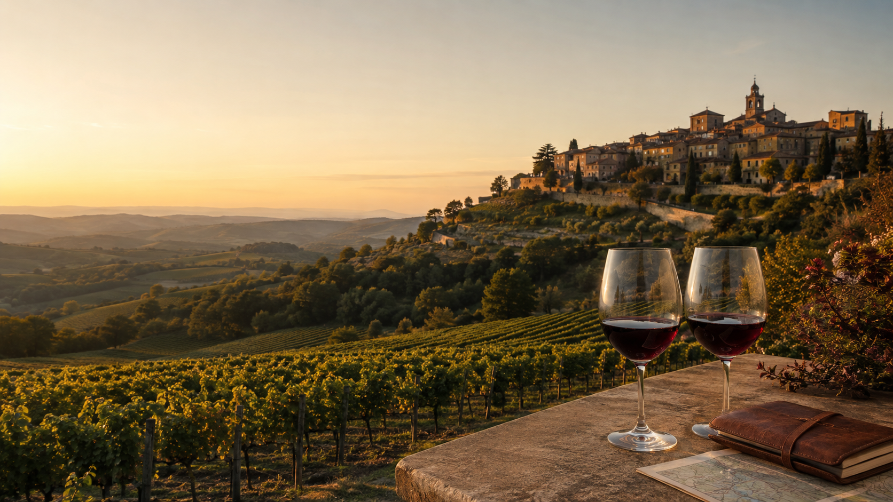
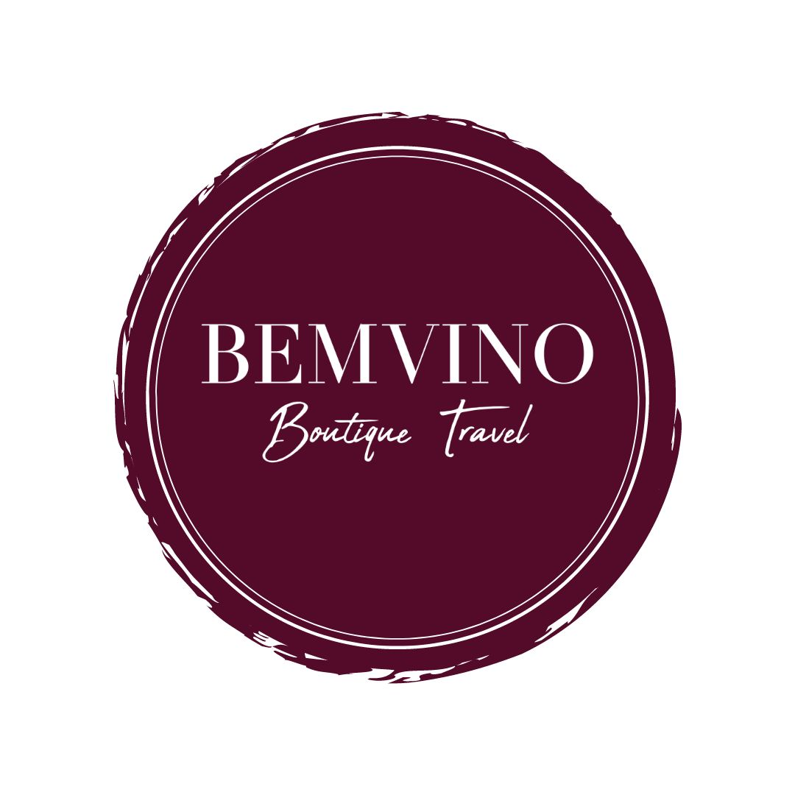

Boutique travel · Enogastronomia
Viagens que despertam todos os sentidos.
Roteiros autorais, pequenos grupos e experiências cuidadosamente selecionadas pelo mundo.
Roteiros exclusivosCuradoria próximaExperiências memoráveis
Entre taças e destinos, desenhamos memórias que brindam a vida.